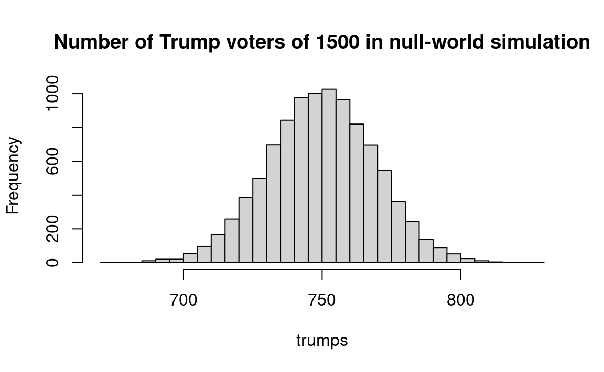

| Trial no | # of tails | >=14 or <=6 |
|---|---|---|
| 1 | 12 | No |
| 2 | 12 | No |
| 3 | 8 | No |
| 4 | 11 | No |
| 5 | 8 | No |
| 6 | 10 | No |
| 7 | 11 | No |
| 8 | 6 | Yes |
| 9 | 6 | Yes |
| 10 | 10 | No |
| 11 | 11 | No |
| 12 | 12 | No |
| 13 | 7 | No |
| 14 | 15 | Yes |
| 15 | 13 | No |
| 16 | 9 | No |
| 17 | 9 | No |
| 18 | 10 | No |
| 19 | 10 | No |
| 20 | 9 | No |
| 21 | 12 | No |
| 22 | 11 | No |
| 23 | 4 | Yes |
| 24 | 16 | Yes |
| 25 | 7 | No |
21 Hypothesis-Testing with Counted Data, Part 1
21.1 Introduction
The first task in inferential statistics is to make one or more point estimates — that is, to make one or more statements about how much there is of something we are interested in — including especially the mean and the dispersion. (That work goes under the label “estimation” and is discussed in Chapter 19.) Frequently the next step, after making such quantitative estimation of the universe from which a sample has been drawn, is to consider whether two or more samples are different from each other, or whether the single sample is different from a specified value; this work goes under the label “hypothesis testing.” We ask: Did something happen? Or: Is there a difference between two universes? These are yes-no questions.
In other cases, the next step is to inquire into the reliability of the estimates; this goes under the label “confidence intervals.” (Some writers include assessing reliability under the rubric of estimation, but I judge it better not to do so).
So: Having reviewed how to convert hypothesis-testing problems into statistically testable questions in Chapter 20, we now must ask: How does one employ resampling methods to make the statistical test? As is always the case when using resampling techniques, there is no unique series of steps by which to proceed. The crucial criterion in assessing the model is whether it accurately simulates the actual event. With hypothesis-testing problems, any number of models may be correct. Generally speaking, though, the model that makes fullest use of the quantitative information available from the data is the best model.
When attempting to deduce the characteristics of a universe from sample data, or when asking whether a sample was drawn from a particular universe, a crucial issue is whether a “one-tailed test” or a “two-tailed test” should be applied. That is, in examining the results of our resampling experiment based on the benchmark universe, do we examine both ends of the frequency distribution, or just one? If there is strong reason to believe a priori that the difference between the benchmark (null) universe and the sample will be in a given direction — for example if you hypothesize that the sample mean will be smaller than the mean of the benchmark universe — you should then employ a one-tailed test . If you do not have strong basis for such a prediction, use the two-tailed test. As an example, when a scientist tests a new medication, his/her hypothesis would be that the number of patients who get well will be higher in the treated group than in the control group. Thus, s/he applies the one-tailed test. See the text below for more detail on one- and two-tailed tests.
Some language first:
Hypothesis: In inferential statistics, a statement or claim about a universe that can be tested and that you wish to investigate.
Testing: The process of investigating the validity of a hypothesis.
Benchmark (or null) hypothesis: A particular hypothesis chosen for convenience when testing hypotheses in inferential statistics. For example, we could test the hypothesis that there is no difference between a sample and a given universe, or between two samples, or that a parameter is less than or greater than a certain value. The benchmark universe refers to this hypothesis. (The concept of the benchmark or null hypothesis was discussed in Chapter 9 and Chapter 20.)
Now let us begin the actual statistical testing of various sorts of hypotheses about samples and populations.
21.2 Should a single sample of counted data be considered different from a benchmark universe?
21.2.0.1 Example: Does Irradiation Affect the Sex Ratio in Fruit Flies?
Where the Benchmark Universe Mean (in this case, the Proportion) is Known, is the Mean (Proportion) of the Population Affected by the Treatment?)
You think you have developed a technique for irradiating the genes of fruit flies so that the sex ratio of the offspring will not be half males and half females. In the first twenty cases you treat, there are fourteen males and six females. Does this experimental result confirm that the irradiation does work?
First convert the scientific question — whether or not the treatment affects the sex distribution — into a probability-statistical question: Is the observed sample likely to have come from a benchmark universe in which the sex ratio is one male to one female? The benchmark (null) hypothesis, then, is that the treatment makes no difference and the sample comes from the one-male-to-one-female universe. Therefore, we investigate how likely a one-to-one universe is to produce a distribution of fourteen or more of just one sex.
A coin has a one-to-one (one out of two) chance of coming up tails. Therefore, we might flip a coin in groups of twenty flips, and count the number of tails in each twenty flips. Or we can use a random number table. The following steps will produce a sound estimate:
- Step 1. Let tails = male, heads = female.
- Step 2. Flip twenty coins and count the number of males. If 14 or more males occur, record “yes.” Also, if 6 or fewer males occur, record “yes” because this means we have gotten 14 or more females. Otherwise, record “no.”
- Step 3. Repeat step 2 perhaps 100 times.
- Step 4. Calculate the proportion “yes” in the 100 trials. This proportion estimates the probability that a fruit-fly population with a propensity to produce 50 percent males will by chance produce as many as 14 or as few as 6 males in a sample of 20 flies.
Table 21.1 shows the results obtained in 25 trials of twenty flips each. In two of the twenty-five trials (8 percent) there were fourteen or more tails, which we call “males,” and in three of the 25 trials (12 percent) there six or fewer tails, meaning there were fourteen or more heads (“females”). We can therefore estimate that, even if the treatment does not affect the sex and the births over a long period really are one to one, five out of twenty-five times (20 percent) we would get fourteen or more of one sex or the other. Therefore, finding fourteen males out of 20 births is not overwhelming evidence that the treatment has any effect, even though the result is suggestive.
How accurate is the estimate? Seventy-five more trials were made, and of the 100 trials nine contained fourteen or more “males” (9 percent), and 8 trials contained fourteen or more “females” (8 percent), a total of 17 percent. So the first twenty-five trials gave a fairly reliable indication. As a matter of fact, analytically-based computation (not explained here) shows that the probability of getting fourteen or more females out of twenty births is .057 and, of course, the same for fourteen or more males from a one-to-one universe, implying a total probability of .114 of getting fourteen or more males or females.
Now let us obtain larger and more accurate simulation samples with the computer. The key step in the R notebook below represents male fruit flies with the string 'male' and female fruit flies with the string 'female'. The sample function is then used to generate 20 of these strings with an equal probability that either string is selected. This simulates randomly choosing 20 fruit flies on the benchmark assumption — the “null hypothesis” — that each fruit fly has an equal chance of being a male or female. Now we want to discover the chances of getting more than 13 (i.e., 14 or more) males or more than 13 females under these conditions. So we use sum to count the number of males in each random sample and then store this value in the scores vector of this number for each sample. We repeat these steps 10,000 times.
After ten thousand samples have been drawn, we count (sum) how often there were more than 13 males and then count the number of times there were fewer than 7 males (because if there were fewer than 7 males there must have been more than 13 females). When we add the two results together we have the probability that the results obtained from the sample of irradiated fruit flies would be obtained from a random sample of fruit flies.
Start of fruit_fly notebook
# Set the number of trials
n_trials <- 10000
# set the sample size for each trial
sample_size <- 20
# An empty array to store the trials
scores <- numeric(n_trials)
# Do 10000 trials
for (i in 1:n_trials) {
# Generate 20 simulated fruit flies, where each has an equal chance of being
# male or female
a <- sample(c('male', 'female'),
size=sample_size,
prob=c(0.5, 0.5),
replace=TRUE)
# count the number of males in the sample
b <- sum(a == 'male')
# store the result of this trial
scores[i] <- b
}
# Produce a histogram of the trial results
title_of_plot <- paste0("Number of males in", n_trials, " samples of \n", sample_size, " simulated fruit flies")
hist(scores, xlab='Number of Males', main=title_of_plot)
In the histogram above, we see that in 16 percent of the trials, the number of males was 14 or more, or 6 or fewer. Or instead of reading the results from the histogram, we can calculate the result by tacking on the following commands to the above program:
# Determine the number of trials in which we had 14 or more males.
j <- sum(scores >= 14)
# Determine the number of trials in which we had 6 or fewer males.
k <- sum(scores <= 6)
# Add the two results together.
m <- j + k
# Convert to a proportion.
mm <- m/n_trials
# Print the results.
print(mm)[1] 0.121End of fruit_fly notebook
Notice that the strength of the evidence for the effectiveness of the radiation treatment depends upon the original question: whether or not the treatment had any effect on the sex of the fruit fly, which is a two-tailed question. If there were reason to believe at the start that the treatment could increase only the number of males , then we would focus our attention on the result that in only two of the twenty-five trials were fourteen or more males. There would then be only a 2/25 = 0.08 probability of getting the observed results by chance if the treatment really has no effect, rather than the weaker odds against obtaining fourteen or more of either males or females.
Therefore, whether you decide to figure the odds of just fourteen or more males (what is called a “one-tail test”) or the odds for fourteen or more males plus fourteen or more females (a “two-tail test”), depends upon your advance knowledge of the subject. If you have no reason to believe that the treatment will have an effect only in the direction of creating more males and if you figure the odds for the one-tail test anyway, then you will be kidding yourself. Theory comes to bear here. If you have a strong hypothesis, deduced from a strong theory, that there will be more males, then you should figure one-tail odds, but if you have no such theory you should figure the weaker two-tail odds.1
In the case of the next problem concerning calves, we shall see that a one-tail test is appropriate because we have no interest in producing more male calves. Before leaving this example, let us review our intellectual strategy in handling the problem. First we observe a result (14 males in 20 flies) which differs from the proportion of the benchmark population (50 percent males). Because we have treated this sample with irradiation and observed a result that differs from the untreated benchmark-population’s mean, we speculate that the irradiation caused the sample to differ from the untreated population. We wish to check on whether this speculation is correct.
When asking whether this speculation is correct, we are implicitly asking whether future irradiation would also produce a proportion of males higher than 50 percent. That is, we are implicitly asking whether irradiated flies would produce more samples with male proportions as high as 14/20 than would occur by chance in the absence of irradiation.
If samples as far away as 14/20 from the benchmark population mean of 10/20 would occur frequently by chance, then we would not be impressed with that experimental evidence as proof that irradiation does affect the sex ratio. Hence we set up a model that will tell us the frequency with which samples of 14 or more males out of 20 births would be observed by chance. Carrying out the resampling procedure tells us that perhaps a tenth of the time such samples would be observed by chance. That is not extremely frequent, but it is not infrequent either. Hence we would probably conclude that the evidence is provocative enough to justify further experimentation, but not so strong that we should immediately believe in the truth of this speculation.
The logic of attaching meaning to the probabilistic outcome of a test of a hypothesis is discussed in Chapter 22. There also is more about the concept of the level of significance in Chapter 22.
Because of the great importance of this sort of case, which brings out the basic principles particularly clearly, let us consider another example:
21.2.1 Example: Does a treatment increase the female calf rate?
What is the probability that among 10 calves born, 9 or more will be female?
Let’s consider this question in the context of a set of queries for performing statistical inference that will be discussed further in Chapter 25.
The question: (From Hodges Jr and Lehmann (1970)): Female calves are more valuable than males. A bio-engineer claims to be able to cause more females to be born than the expected 50 percent rate. He conducts his procedure, and nine females are born out of the next 10 pregnancies among the treated cows. Should you believe his claim? That is, what is the probability of a result this (or more) surprising occurring by chance if his procedure has no effect? In this problem, we assume that on average 100 of 206 births are female, in contrast to the 50-50 benchmark universe in the previous problem.
What is the purpose of the work?: Female calves are more valuable than male calves.
Statistical inference?: Yes.
Confidence interval or Test of hypothesis?: Test of hypothesis.
Will you state the costs and benefits of various outcomes, or a loss function?: Yes. One need only say that the benefits are very large, and if the results are promising, it is worth gathering more data to confirm results.
How many samples of data are part of the hypothesis test?: One.
What is the size of the first sample about which you wish to make significance statements?: Ten.
What comparison(s) to make?: Compare the sample to the benchmark universe.
What is the benchmark universe: that embodies the null hypothesis? 100/206 female.
Which symbols for the observed entities?: Balls in bucket, or numbers.
What values or ranges of values?: We could write numbers 1 through 206 on pieces of paper, and take numbers 1-100 as “male” and 101-206 as “female”. Or we could use some other mechanism to give us a 100/206 chance of any one calf being female.
Finite or infinite universe?: Infinite.
Which sample(s) do you wish to compare to which, or to the null universe (and perhaps to the alternative universe)?: Ten calves.
What procedure to produce the sample entities?: Sampling with replacement.
Simple (single step) or complex (multiple “if” drawings)?: Can think of it either way.
What to record as the outcome of each resample trial?: The proportion (or number) of females.
What is the criterion to be used in the test?: The probability that in a sample of ten calves, nine (or more) females would be drawn by chance from the benchmark universe of 100/206 females.
“One tail” or “two tail” test?: One tail, because the farmer is only interested in females. Finding a large proportion of males would not be of interest; it would not cause rejecting the null hypothesis.
The actual computation of probability may be done in several ways, as discussed earlier for four children and for ten cows. Conventional methods are discussed for comparison in Chapter 25. Here is the resampling solution in R.
Start of female_calves notebook
# Set the number of trials.
n_trials <- 10000
# Set the size of each sample.
sample_size <- 10
# Probability of any one calf being female.
p_female <- 100 / 206
# A vector to store the results.
scores <- numeric(n_trials)
# for 10000 repeats.
for (i in 1:n_trials) {
a <- sample(c('female', 'male'),
size=sample_size,
prob=c(p_female, 1 - p_female),
replace=TRUE)
b <- sum(a == 'female')
# Store the result of the current trial.
scores[i] <- b
}
# Plot a histogram of the scores.
title_of_plot <- paste0("Number of females in", n_trials, " samples of \n", sample_size, " simulated calves")
hist(scores, xlab = 'Number of Females', main=title_of_plot)
# Count the number of scores that were greater than or equal to 9.
k <- sum(scores >= 9)
# Express as a proportion.
kk <- k / n_trials
# Show the proportion.
message("Probability of 9 or 10 females occurring by chance: ", kk)Probability of 9 or 10 females occurring by chance: 0.0106
We read from the result in variable kk that the probability of 9 or 10 females occurring by chance is a bit more than one percent.
End of female_calves notebook
21.2.2 Example: A Public-Opinion Poll
Is the Proportion of a Population Greater Than a Given Value?
A municipal official wants to determine whether a majority of the town’s residents are for or against the awarding of a high-speed internet contract, and she asks you to take a poll. You judge that the voter registration records are a fair representation of the universe in which the politician was interested, and you therefore decided to interview a random selection of registered voters. Of a sample of fifty people who expressed opinions, thirty said “yes” they were for the plan and twenty said “no,” they were against it. How conclusively do the results show that the people in town want this internet contract?
Now comes some necessary subtle thinking in the interpretation of what seems like a simple problem. Notice that our aim in the analysis is to avoid the mistake of saying that the town favors the plan when in fact it does not favor the plan. Our chance of making this mistake is greatest when the voters are evenly split, so we choose as the benchmark (null) hypothesis that 50 percent of the town does not want the plan. This statement really means that “50 percent or more do not want the plan.” We could assess the probability of obtaining our result from a population that is split (say) 52-48 against, but such a probability would necessarily be even smaller, and we are primarily interested in assessing the maximum probability of being wrong. If the maximum probability of error turns out to be inconsequential, then we need not worry about less likely errors.
This problem is very much like the one-group fruit fly irradiation problem above. The only difference is that now we are comparing the observed sample against an arbitrary value of 50 percent (because that is the break-point in a situation where the majority decides) whereas in Section 21.2.0.1 we compared the observed sample against the normal population proportion (also 50 percent, because that is the normal proportion of males). But it really does not matter why we are comparing the observed sample to the figure of 50 percent; the procedure is the same in both cases. (Please notice that there is nothing special about the 50 percent figure; the same procedure would be followed for 20 percent or 85 percent.)
In brief, we a) take two pieces of paper, write “Yes” on one and “No” on the other, put them in a bucket b) draw a piece of paper from the bucket, record whether it was “Yes” or “No”, replace, and repeat 50 times c) count the number of “yeses” and “noes” in the fifty draws, c) repeat for perhaps a hundred trials, then d) count the proportion of the trials in which a 50-50 universe would produce thirty or more “yes” answers.
In operational steps, the procedure is as follows:
- Step 1. “1-5” = no, “6-0” = yes.
- Step 2. In 50 random numbers, count the “yeses,” and record “false positive” if 30 or more “yeses.”
- Step 3. Repeat step 2 perhaps 100 times.
- Step 4. Calculate the proportion of experimental trials showing “false positive.” This estimates the probability that as many as 30 “yeses” would be observed by chance in a sample of 50 people if half (or more) are really against the plan.
| Trial no | # of "Noes" | # of "Yeses" | >= 30 "Yeses" |
|---|---|---|---|
| 1 | 25 | 25 | |
| 2 | 23 | 27 | |
| 3 | 18 | 32 | + |
| 4 | 33 | 17 | |
| 5 | 32 | 18 | |
| 6 | 23 | 27 | |
| 7 | 28 | 22 | |
| 8 | 28 | 22 | |
| 9 | 22 | 28 | |
| 10 | 30 | 20 | |
| 11 | 22 | 28 | |
| 12 | 28 | 22 | |
| 13 | 26 | 24 | |
| 14 | 20 | 30 | + |
| 15 | 27 | 23 | |
| 16 | 19 | 31 | + |
| 17 | 26 | 24 | |
| 18 | 27 | 23 | |
| 19 | 20 | 30 | + |
| 20 | 24 | 26 |
In Table 21.2, we see the results of twenty trials; 4 of 20 times (20 percent), 30 or more “yeses” were observed by chance. So our “significance level” or “probability value” is 20 percent, which is normally too high to feel confident that our poll results are reliable. This is the probability that as many as thirty of fifty people would say “yes” by chance if the population were “really” split evenly. (If the population were split so that more than 50 percent were against the plan, the probability would be even less that the observed results would occur by chance. In this sense, the benchmark hypothesis is conservative). On the other hand, if we had been counting the number of times there are 30 or more “No” votes that, in our setup, have the same odds as to 30 or more “Yes” votes, there would have been three. This indicates how samples can vary just by chance.
Taken together, the evidence suggests that the official would be wise not to place very much confidence in the poll results, but rather ought to act with caution or else take a larger sample of voters.
Start of contract_poll notebook
This R notebook generates samples of 50 simulated voters on the assumption that only 50 percent are in favor of the contract. Then it counts (sums) the number of samples where over 29 (30 or more) of the 50 respondents said they were in favor of the contract. (That is, we use a “one-tailed test.”) The result in the kk variable is the chance of a “false positive,” that is, 30 or more people saying they favor a contract when support for the proposal is actually split evenly down the middle.
# We will do 10,000 iterations.
n <- 10000
# Make an array of integers to store the "Yes" counts.
yeses <- numeric(n)
for (i in 1:n) {
answers <- sample(c('No', 'Yes'), size=50, replace=TRUE)
yeses[i] <- sum(answers == 'Yes')
}
# Produce a histogram of the trial results.
# Use integer bins for histogram, from 10 through 40.
hist(yeses, breaks=10:40,
main='Number of yes votes out of 50, in null universe')
In the histogram above, we see that about 11 percent of our trials had 30 or more voters in favor, despite the fact that they were drawn from a population that was split 50-50. R will calculate this proportion directly if we add the following commands to the above:
k <- sum(yeses >= 30)
kk <- k / n
message('Proportion >= 30: ', round(kk, 2))Proportion >= 30: 0.1End of contract_poll notebook
The section above discusses testing hypotheses about a single sample of counted data relative to a benchmark universe. This section discusses the issue of whether two samples with counted data should be considered the same or different.
21.2.3 Example: Did the Trump-Clinton Poll Indicate that Trump Would Win?
Start of trump_clinton notebook
What is the probability that a sample outcome such as actually observed (840 Trump, 660 Clinton) would occur by chance if Clinton is “really” ahead — that is, if Clinton has 50 percent (or more) of the support? To restate in sharper statistical language: What is the probability that the observed sample or one even more favorable to Trump would occur if the universe has a mean of 50 percent or below?
Here is a procedure that responds to that question:
- Create a benchmark universe with one ball marked “Trump” and another marked “Clinton”
- Draw a ball, record its marking, and replace. (We sample with replacement to simulate the practically-infinite population of U. S. voters.)
- Repeat step 2 1500 times and count the number of “Trump”s. If 840 or greater, record “Y”; otherwise, record “N.”
- Repeat steps 3 and 4 perhaps 1000 or 10,000 times, and count the number of “Y”s. The outcome estimates the probability that 840 or more Trump choices would occur if the universe is “really” half or more in favor of Clinton.
This procedure may be done as follows with R.
# Number of repeats we will run.
n <- 10000
# Make an array to store the counts.
trumps <- numeric(n)
for (i in 1:n) {
votes <- sample(c('Trump', 'Clinton'), size=1500, replace=TRUE)
trumps[i] <- sum(votes == 'Trump')
}
# Integer bins from 670 through 830 in steps of 5.
hist(trumps, breaks=seq(670, 830, by=5),
main='Number of Trump voters of 1500 in null-world simulation')
# How often >= 840 Trump votes in random draw?
k <- sum(trumps >= 840)
# As a proportion of simulated resamples.
kk <- k / n
message('Proportion voting for Trump: ', kk)Proportion voting for Trump: 0
The value for kk is our estimate of the probability that Trump’s “victory” in the sample would occur by chance if he really were behind. In this case, our probability estimate is less than 1 in 10,000 (< 0.0001).
End of trump_clinton notebook
21.2.4 Example: Comparison of Possible Cancer Cure to Placebo
Do Two Binomial Populations Differ in Their Proportions.
Section 21.2.0.1 used an observed sample of male and female fruitflies to test the benchmark (null) hypothesis that the flies came from a universe with a one-to-one sex ratio, and the poll data problem also compared results to a 50-50 hypothesis. The calves problem also compared the results to a single benchmark universe — a proportion of 100/206 females. Now we want to compare two samples with each other , rather than comparing one sample with a hypothesized universe. That is, in this example we are not comparing one sample to a benchmark universe, but rather asking whether both samples come from the same universe. The universe from which both samples come, if both belong to the same universe, may be thought of as the benchmark universe, in this case.
The scientific question is whether pill P cures a rare cancer. A researcher gave pill P to six patients selected randomly from a group of twelve cancer patients; of the six, five got well. He gave an inactive placebo to the other six patients, and two of them got well. Does the evidence justify a conclusion that the pill has a curative effect?
(An identical statistical example would serve for an experiment on methods of teaching reading to children. In such a situation the researcher would respond to inconclusive results by running the experiment on more subjects, but in cases like the cancer-pill example the researcher often cannot obtain more subjects.)
We can answer the stated question by combining the two samples and testing both samples against the resulting combined universe. In this case, the universe is twelve subjects, seven (5 + 2) of whom got well. How likely would such a universe produce two samples as far apart as five of six, and two of six, patients who get well? In other words, how often will two samples of six subjects, each drawn from a universe in which 7/12 of the patients get well, be as far apart as 5 - 2 = 3 patients in favor of the sample designated “pill”? This is obviously a one-tail test, for we have no reason to believe that the pill group might do less well than the placebo group.
We might construct a twelve-sided die, seven of whose sides are marked “get well.” Or put 12 pieces of paper in a bucket, seven with “get well” and five with “not well”. Or we would use pairs of numbers from the random-number table, with numbers “01-07” corresponding to get well, numbers “08-12” corresponding to “not get well,” and all other numbers omitted. (If you wish to save time, you can work out a system that uses more numbers and skips fewer, but that is up to you.) Designate the first six subjects “pill” and the next six subjects “placebo.”
The specific procedure might be as follows:
- Step 1. Write “get well” on seven pieces of paper, “not well” on another five. Put the 12 pieces of paper into a bucket.
- Step 2. Select two groups, “pill” and “placebo”, each with six random draws (with replacement) from the 12 pieces of paper.
- Step 3. Record how many “get well” in each group.
- Step 4. Subtract the result in group “placebo” from that in group “pill” (the difference may be negative).
- Step 5. Repeat steps 1-4 perhaps 100 times.
- Step 6. Compute the proportion of trials in which the pill does better by three or more cases.
| Trial no | # of pill cures | # of placebo cures | Difference |
|---|---|---|---|
| 1 | 2 | 6 | -4 |
| 2 | 2 | 1 | 1 |
| 3 | 2 | 5 | -3 |
| 4 | 2 | 4 | -2 |
| 5 | 4 | 5 | -1 |
| 6 | 5 | 2 | 3 |
| 7 | 3 | 3 | 0 |
| 8 | 2 | 3 | -1 |
| 9 | 5 | 5 | 0 |
| 10 | 5 | 4 | 1 |
| 11 | 5 | 2 | 3 |
| 12 | 3 | 4 | -1 |
| 13 | 3 | 6 | -3 |
| 14 | 3 | 4 | -1 |
| 15 | 4 | 3 | 1 |
| 16 | 5 | 3 | 2 |
| 17 | 4 | 4 | 0 |
| 18 | 4 | 4 | 0 |
| 19 | 3 | 3 | 0 |
| 20 | 4 | 4 | 0 |
| 21 | 3 | 5 | -2 |
| 22 | 5 | 3 | 2 |
| 23 | 4 | 4 | 0 |
| 24 | 3 | 4 | -1 |
| 25 | 3 | 3 | 0 |
In the trials shown in Table 21.3, in two cases (8 percent) the difference between the randomly-drawn groups is three cases or greater. Apparently it is somewhat unusual — it happens 8 percent of the time — for this universe to generate “pill” samples in which the number of recoveries exceeds the number in the “placebo” samples by three or more. Therefore the answer to the scientific question, based on these samples, is that there is some reason to think that the medicine does have a favorable effect. But the investigator might sensibly await more data before reaching a firm conclusion about the pill’s efficiency, given the 8 percent probability.
Start of pill_placebo notebook
Now for a R solution. Again, the benchmark hypothesis is that pill P has no effect, and we ask how often, on this assumption, the results that were obtained from the actual test of the pill would occur by chance.
Given that in the test 7 of 12 patients overall got well, the benchmark hypothesis assumes 7/12 to be the chances of any random patient being cured. We generate two similar samples of 6 patients, both taken from the same universe composed of the combined samples — the bootstrap procedure. We count (sum) the number who are “get well” in each sample. Then we subtract the number who got well in the “pill” sample from the number who got well in the “no-pill” sample. We record the resulting difference for each trial in the variable pill_betters.
In the actual test, 3 more patients got well in the sample given the pill than in the sample given the placebo. We therefore count how many of the trials yield results where the difference between the sample given the pill and the sample not given the pill was greater than 2 (equal to or greater than 3). This result is the probability that the results derived from the actual test would be obtained from random samples drawn from a population which has a constant cure rate, pill or no pill.
# The bucket with the pieces of paper.
options <- rep(c('get well', 'not well'), c(7, 5))
n <- 10000
pill_betters <- numeric(n)
for (i in 1:n) {
pill <- sample(options, size=6, replace=TRUE)
pill_cures <- sum(pill == 'get well')
placebo <- sample(options, size=6, replace=TRUE)
placebo_cures <- sum(placebo == 'get well')
pill_betters[i] <- pill_cures - placebo_cures
}
hist(pill_betters, breaks=-6:6,
main='Number of extra cures pill vs placebo in null universe')Recall our actual observed results: In the medicine group, three more patients were cured than in the placebo group. From the histogram, we see that in only about 8 percent of the simulated trials did the “medicine” group do as well or better. The results seem to suggest — but by no means conclusively — that the medicine’s performance is not due to chance. Further study would probably be warranted. The following commands added to the above program will calculate this proportion directly:
End of pill_placebo notebook
As I (JLS) wrote when I first proposed this bootstrap method in 1969, this method is not the standard way of handling the problem; it is not even analogous to the standard analytic difference-of-proportions method (though since then it has become widely accepted). Though the method shown is quite direct and satisfactory, there are also many other resampling methods that one might construct to solve the same problem. By all means, invent your own statistics rather than simply trying to copy the methods described here; the examples given here only illustrate the process of inventing statistics rather than offering solutions for all classes of problems.
21.2.5 Example: Did Attitudes About Marijuana Change?
Consider two polls, each asking 1500 Americans about marijuana legalization. One poll, taken in 1980, found 52 percent of respondents in favor of decriminalization; the other, taken in 1985, found 46 percent in favor of decriminalization (Wonnacott and Wonnacott 1990, 275). Our null (benchmark) hypothesis is that both samples came from the same universe (the universe made up of the total of the two sets of observations). If so, let us then ask how likely would be two polls to produce results as different as were observed? Hence we construct a universe with a mean of 49 percent (the mean of the two polls of 52 percent and 46 percent), and repeatedly draw pairs of samples of size 1500 from it.
To see how the construction of the appropriate question is much more challenging intellectually than is the actual mathematics, let us consider another possibility suggested by a student: What about considering the universe to be the earlier poll with a mean of 52 percent, and then asking the probability that the later poll of 1500 people with a mean of 46 percent would come from it? Indeed, on first thought that procedure seems reasonable.
Upon reflection — and it takes considerable thought on these matters to get them right — that would not be an appropriate procedure. The student’s suggested procedure would be the same as assuming that we had long-run solid knowledge of the universe, as if based on millions of observations, and then asking about the probability of a particular sample drawn from it. That does not correspond to the facts.
The only way to find the approach you eventually consider best — and there is no guarantee that it is indeed correct — is by close reference to the particular facts of the case.
21.2.6 Example: Infarction and Cholesterol: Framingham Study
It is so important to understand the logic of hypothesis tests, and of the resampling method of doing them, that we will now tackle another problem similar to the preceding one.
This will be the first of several problems that use data from the famous Framingham study (drawn from Kahn and Sempos (1989)) concerning the development of myocardial infarction 16 years after the Framingham study began, for men ages 35- 44 with serum cholesterol above 250, compared to those with serum cholesterol below 250. The raw data are shown in Table 21.4. The data are from (Shurtleff 1970), cited in (Kahn and Sempos 1989, 12:61, Table 3-8). Kahn and Sempos divided the cases into “high” and “low” cholesterol.
| Serum Cholesterol | Developed MI | Didn’t Develop MI | Total |
|---|---|---|---|
| > 250 | 10 | 125 | 135 |
| <= 250 | 21 | 449 | 470 |
The statistical logic properly begins by asking: How likely is that the two observed groups “really” came from the same “population” with respect to infarction rates? That is, we start with this question: How sure should one be that there is a difference in myocardial infarction rates between the high and low-cholesterol groups? Operationally, we address this issue by asking how likely it is that two groups as different in disease rates as the observed groups would be produced by the same “statistical universe.”
Key step: We assume that the relevant “benchmark” or “null hypothesis” population (universe) is the composite of the two observed groups. That is, if there were no “true” difference in infarction rates between the two serum-cholesterol groups, and the observed disease differences occurred just because of sampling variation, the most reasonable representation of the population from which they came is the composite of the two observed groups.
Therefore, we compose a hypothetical “benchmark” universe containing (135 + 470 =) 605 men at risk, and designate (10 + 21 =) 31 of them as infarction cases. We want to determine how likely it is that a universe like this one would produce — just by chance — two groups that differ as much as do the actually observed groups. That is, how often would random sampling from this universe produce one sub-sample of 135 men containing a large enough number of infarctions, and the other sub-sample of 470 men producing few enough infarctions, that the difference in occurrence rates would be as high as the observed difference of .029? (10/135 = .074, and 21/470 = .045, and .074 - .045 = .029).
So far, everything that has been said applies both to the conventional formulaic method and to the “new statistics” resampling method. But the logic is seldom explained to the reader of a piece of research — if indeed the researcher her/ himself grasps what the formula is doing. And if one just grabs for a formula with a prayer that it is the right one, one need never analyze the statistical logic of the problem at hand.
Now we tackle this problem with a method that you would think of yourself if you began with the following mind-set: How can I simulate the mechanism whose operation I wish to understand? These steps will do the job:
- Step 1: Fill a bucket with 605 balls, 31 red (infarction) and the rest (605 — 31 = 574) green (no infarction).
- Step 2: Draw a sample of 135 (simulating the high serum-cholesterol group), one ball at a time and throwing it back after it is drawn to keep the simulated probability of an infarction the same throughout the sample; record the number of reds. Then do the same with another sample of 470 (the low serum-cholesterol group).
- Step 3: Calculate the difference in infarction rates for the two simulated groups, and compare it to the actual difference of .029; if the simulated difference is that large, record “Yes” for this trial; if not, record “No.”
- Step 4: Repeat steps 2 and 3 until a total of (say) 400 or 1000 trials have been completed. Compute the frequency with which the simulated groups produce a difference as great as actually observed. This frequency is an estimate of the probability that a difference as great as actually observed in Framingham would occur even if serum cholesterol has no effect upon myocardial infarction.
The procedure above can be carried out with balls in a bucket in a few hours. Yet it is natural to seek the added convenience of the computer to draw the samples. Here is a R program:
Start of framingham_hearts notebook
n <- 10000
men <- rep(c('infarction', 'no infarction'), c(31, 574))
n_high <- 135 # Number of men with high cholesterol
n_low <- 470 # Number of men with low cholesterol
infarct_differences <- numeric(n)
for (i in 1:n) {
highs <- sample(men, size=n_high, replace=TRUE)
lows <- sample(men, size=n_low, replace=TRUE)
high_infarcts <- sum(highs == 'infarction')
low_infarcts <- sum(lows == 'infarction')
high_prop <- high_infarcts / n_high
low_prop <- low_infarcts / n_low
infarct_differences[i] <- high_prop - low_prop
}
hist(infarct_differences, breaks=seq(-0.1, 0.1, by=0.005),
main='Infarct proportion differences in null universe')
# How often was the resampled difference >= the observed difference?
k <- sum(infarct_differences >= 0.029)
# Convert this result to a proportion
kk <- k / n
message('Proportion of trials with difference >= observed: ',
round(kk, 2))Proportion of trials with difference >= observed: 0.1The results of the test using this program may be seen in the histogram. We find — perhaps surprisingly — that a difference as large as observed would occur by chance around 10 percent of the time. (If we were not guided by the theoretical expectation that high serum cholesterol produces heart disease, we might include the 10 percent difference going in the other direction, giving a 20 percent chance). Even a ten percent chance is sufficient to call into question the conclusion that high serum cholesterol is dangerous. At a minimum, this statistical result should call for more research before taking any strong action clinically or otherwise.
End of framingham_hearts notebook
Where should one look to determine which procedures should be used to deal with a problem such as set forth above? Unlike the formulaic approach, the basic source is not a manual which sets forth a menu of formulas together with sets of rules about when they are appropriate. Rather, you consult your own understanding about what is happening in (say) the Framingham situation, and the question that needs to be answered, and then you construct a “model” that is as faithful to the facts as is possible. The bucket-sampling described above is such a model for the case at hand.
To connect up what we have done with the conventional approach, one could apply a z test (conceptually similar to the t test, but applicable to yes-no data; it is the Normal-distribution approximation to the large binomial distribution). Do so, we find that the results are much the same as the resampling result — an eleven percent probability.
Someone may ask: Why do a resampling test when you can use a standard device such as a z or t test? The great advantage of resampling is that it avoids using the wrong method. The researcher is more likely to arrive at sound conclusions with resampling because s/he can understand what s/he is doing, instead of blindly grabbing a formula which may be in error.
The textbook from which the problem is drawn is an excellent one; the difficulty of its presentation is an inescapable consequence of the formulaic approach to probability and statistics. The body of complex algebra and tables that only a rare expert understands down to the foundations constitutes an impenetrable wall to understanding. Yet without such understanding, there can be only rote practice, which leads to frustration and error.
21.2.7 Example: Is One Pig Ration More Effective Than the Other?
Testing For a Difference in Means With a Two-by-Two Classification.
Each of two new types of ration is fed to twelve pigs. A farmer wants to know whether ration A or ration B is better.2 The weight gains in pounds for pigs fed on rations A and B are:
A: 31, 34, 29, 26, 32, 35, 38, 34, 31, 29, 32, 31
B: 26, 24, 28, 29, 30, 29, 31, 29, 32, 26, 28, 32
The statistical question may be framed as follows: should one consider that the pigs fed on the different rations come from the same universe with respect to weight gains?
In the actual experiment, 9 of the 12 pigs who were fed ration A also were in the top half of weight gains. How likely is it that one group of 12 randomly-chosen pigs would contain 9 of the 12 top weight gainers?
One approach to the problem is to divide the pigs into two groups — the twelve with the highest weight gains, and the twelve with the lowest weight gains — and examine whether an unusually large number of high-weight-gain pigs were fed on one or the other of the rations.
We can make this test by ordering and grouping the twenty four pigs:
- High-weight group: 38 (ration A), 35 (A), 34 (A), 34 (A), 32 (B), 32 (A), 32 (A), 32 (B), 31 (A), 31 (B), 31 (A), 31 (A)
- Low-weight group: 30 (B), 29 (A), 29 (A), 29 (B), 29 (B), 29 (B), 28 (B), 28 (B), 26 (A), 26 (B), 26 (B), 24 (B).
Among the twelve high-weight-gain pigs, nine were fed on ration A. We ask: Is this further from an even split than we are likely to get by chance? Let us take twelve red and twelve black cards, shuffle them, and deal out twelve cards (the other twelve need not be dealt out). Count the proportion of the hands in which one ration comes up nine or more times in the first twelve cards, to reflect ration A’s appearance nine times among the highest twelve weight gains. More specifically:
- Step 1. Constitute a deck of twelve red and twelve black cards, and shuffle.
- Step 2. Deal out twelve cards, count the number red, and record “yes” if there are nine or more of either red or black.
- Step 3. Repeat step 2 perhaps fifty times.
- Step 4. Compute the proportion “yes.” This proportion estimates the probability sought.
| Trial no | # red | # black | >=9 red or black |
|---|---|---|---|
| 1 | 6 | 6 | |
| 2 | 4 | 8 | |
| 3 | 4 | 8 | |
| 4 | 6 | 6 | |
| 5 | 5 | 7 | |
| 6 | 6 | 6 | |
| 7 | 7 | 5 | |
| 8 | 6 | 6 | |
| 9 | 5 | 7 | |
| 10 | 7 | 5 | |
| 11 | 7 | 5 | |
| 12 | 5 | 7 | |
| 13 | 9 | 3 | + |
| 14 | 7 | 5 | |
| 15 | 8 | 4 | |
| 16 | 4 | 8 | |
| 17 | 5 | 7 | |
| 18 | 6 | 6 | |
| 19 | 5 | 7 | |
| 20 | 6 | 6 | |
| 21 | 6 | 6 | |
| 22 | 7 | 5 | |
| 23 | 7 | 5 | |
| 24 | 5 | 7 | |
| 25 | 6 | 6 |
Table 21.5 shows the results of 25 trials. In one (marked by + signs) of the 25 (that is, 4 percent of the trials) there were nine or more either red or black cards in the first twelve cards. Again the results suggest that it would be slightly unusual for the results to favor one ration or the other so strongly just by chance if they come from the same universe.
Now the R procedure to answer the question:
Start of pig_rations notebook
The ranks <- 1:24 statement creates a vector of numbers 1 through 24, which will represent the rankings of weight gains for each of the 24 pigs. We repeat the following procedure for 10000 trials. First we shuffle the elements of vector ranks so that the rank numbers for weight gains are randomized and placed in vector shuffled. We then select the first 12 elements of shuffled and place them in first_12; this represents the rankings of a randomly-selected group of 12 pigs. We next count (sum) in n_top the number of pigs whose rankings for weight gain were in the top half — that is, a rank of less than 13. We record that number in top_ranks, and then continue the loop, until we finish our n trials.
Since we did not know beforehand the direction of the effect of ration A on weight gain, we want to count the times that either more than 8 of the random selection of 12 pigs were in the top half of the rankings, or that fewer than 4 of these pigs were in the top half of the weight gain rankings — (The latter is the same as counting the number of times that more than 8 of the 12 non-selected random pigs were in the top half in weight gain.)
We do so with the final two sum statements. By adding the two results n_gte_9 and n_lte_3 together, we have the number of times out of 10,000 that differences in weight gains in two groups as dramatic as those obtained in the actual experiment would occur by chance.
# Constitute the set of the weight gain rank orders. ranks is now a vector
# consisting of the numbers 1 — 24, in that order.
ranks <- 1:24
n <- 10000
top_ranks <- numeric(n)
for (i in 1:n) {
# Shuffle the ranks of the weight gains.
shuffled <- sample(ranks)
# Take the first 12 ranks.
first_12 <- shuffled[1:12]
# Determine how many of these randomly selected 12 ranks are less than
# 12 (i.e. 1-12), put that result in n_top.
n_top <- sum(first_12 <= 12)
# Keep track of each trial result in top_ranks
top_ranks[i] <- n_top
}
hist(top_ranks, breaks=1:11,
main='Number of top 12 ranks in pig-ration trials')We see from the histogram that, in about 3 percent of the trials, either more than 8 or fewer than 4 top half ranks (1-12) made it into the random group of twelve that we selected. R will calculate this for us as follows:
# Determine how many of the trials yielded 9 or more top ranks.
n_gte_9 <- sum(top_ranks >= 9)
# Determine how many trials yielded 3 or fewer of the top ranks.
# If there were 3 or fewer, then 9 or more of the top ranks must
# have been in the other group (not selected).
n_lte_3 <- sum(top_ranks <= 3)
# Add the two together.
n_both <- n_gte_9 + n_lte_3
# Convert to a proportion.
prop_both <- n_both / n
message('Trial proportion >=9 top ranks in either group: ',
round(prop_both, 2))Trial proportion >=9 top ranks in either group: 0.04The decisions that are warranted on the basis of the results depend upon one’s purpose. If writing a scientific paper on the merits of ration A is the ultimate purpose, it would be sensible to test another batch of pigs to get further evidence. (Or you could proceed to employ another sort of test for a slightly more precise evaluation.) But if the goal is a decision on which type of ration to buy for a small farm and they are the same price, just go ahead and buy ration A because, even if it is no better than ration B, you have strong evidence that it is no worse .
End of pig_rations notebook
21.2.8 Example: Do Planet Densities Differ?
Consider the five planets known to the ancient world.
Mosteller and Rourke (1973, 17–19) ask us to compare the densities of the three planets farther from the sun than is the earth (Mars, density 0.71; Jupiter, 0.24; and Saturn, 0.12) against the densities of the planets closer to the sun than is the earth (Mercury, 0.68; Venus, 0.94).
The average density of the distant planets is .357, of the closer planets is .81. Is this difference (.353) statistically surprising, or is it likely to occur in a chance ordering of these planets?
We can answer this question with a permutation test; such sampling without replacement makes sense here because we are considering the entire set of planets, rather than a sample drawn from a larger population of planets (the word “population” is used here, rather than “universe,” to avoid confusion.) And because the number of objects is so small, one could examine all possible arrangements (permutations), and see how many have (say) differences in mean densities between the two groups as large as observed.
Another method that Mosteller and Rourke suggest is by a comparison of the density ranks of the two sets, where Saturn has rank 1 and Venus has rank 5. This might have a scientific advantage if the sample data are dominated by a single “outlier,” whose domination is removed when we rank the data.
We see that the sum of the ranks for the “closer” set is 3+5=8. We can then ask: If the ranks were assigned at random, how likely is it that a set of two planets would have a sum as large as 8? Again, because the sample is small, we can examine all the possible permutations, as Mosteller and Rourke do in Table 3-1 (Mosteller and Rourke 1973, 56) (Substitute “Closer” for “B,” “Further” for “A”). In two of the ten permutations, a sum of ranks as great as 8 is observed, so the probability of a result as great as observed happening by chance is 20 percent, using these data. (We could just as well consider the difference in mean ranks between the two groups: (8/2 - 7/3 = 10 / 6 = 1.67).
To illuminate the logic of this test, consider comparing the heights of two samples of trees. If sample A has the five tallest trees, and sample B has the five shortest trees, the difference in mean ranks will be (6+7+8+9+10=) 40 — (1+2+3+4+5=) 15, the largest possible difference. If the groups are less sharply differentiated — for example, if sample A has #3 and sample B has #8 — the difference in ranks will be less than the maximum of 40, as you can quickly verify.
The method we have just used is called a Mann-Whitney test, though that label is usually applied when the data are too many to examine all the possible permutations; in that case one conventionally uses a table prepared by formula. In the case where there are too many for a complete permutation test, our resampling algorithm is as follows (though we’ll continue with the planets example):
- Compute the mean ranks of the two groups.
- Calculate the difference between the means computed in step 1.
- Create a bucket containing the ranks from 1 to the number of observations (5, in the case of the planets)
- Shuffle the ranks.
- Since we are working with the ranked data, we must draw without replacement, because there can only be one #3, one #7, and so on. So draw the number of observations corresponding to the number of observations — 2 “Closer” and 3 “Further.”
- Compute the mean ranks of the two simulated groups of planets.
- Calculate the difference between the means computed in step 5 and record.
- Repeat steps 4 through 7 perhaps 1000 times.
- Count how often the shuffled difference in ranks exceeds the observed difference from step 2 (1.67).
Start of planet_densities notebook
# Steps 1 and 2.
actual_mean_diff <- 8 / 2 - 7 / 3
# Step 3
ranks <- 1:5
n <- 10000
mean_differences <- numeric(n)
for (i in 1:n) {
# Step 4
shuffled <- sample(ranks)
# Step 5
closer <- shuffled[1:2] # First 2
further <- shuffled[3:5] # Last 3
# Step 6
mean_close <- mean(closer)
mean_far <- mean(further)
# Step 7
mean_differences[i] <- mean_close - mean_far
}
# Step 9
k <- sum(mean_differences >= actual_mean_diff)
prob <- k / n
message('Proportion of trials with mean difference >= 1.67: ',
round(prob, 2))Proportion of trials with mean difference >= 1.67: 0.2Interpretation: 20 percent of the time, random shufflings produced a difference in ranks as great as or greater than observed. Hence, on the strength of this evidence, we should not conclude that there is a statistically surprising difference in densities between the further planets and the closer planets.
End of planet_densities notebook
21.3 Conclusion
This chapter has begun the actual work of testing hypotheses. The next chapter continues with discussion of somewhat more complex problems with counted data — more complex to think about, but no more difficult to actually treat mathematically with resampling simulation. If you have understood the general logic of the procedures used up until this point, you are in command of all the necessary conceptual knowledge to construct your own tests to answer any statistical question. A lot more practice, working on a variety of problems, obviously would help. But the key elements are simple: 1) Model the real situation accurately, 2) experiment with the model, and 3) compare the results of the model with the observed results.